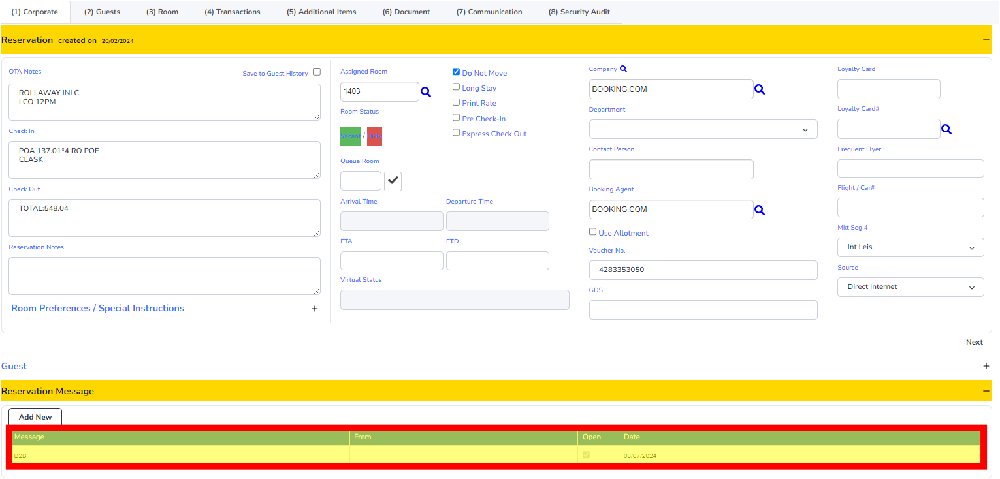
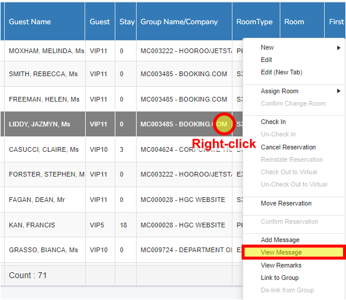

Setting Tasks
Tasks can be set up for guest requests, jobs, or undertakings to be actioned by an individual or department.
Example tasks:
- Roll Res (B2B)
- Set up bottle of sparkling prior to arrival
- Follow up missing chargeback
- Please place a foam pillow and bathrobes on arrival
- Please remove foam pillow after guest departure
- Following up payment
Procedure
Setting up a Task:
- Right-click on the folio that requires a task.
- Click ‘Add Message’.
- Set the type from Message to Task (using the drop-down menu) and ensure Status is “Open”.
- Down further is the Action box:
- Choose the relevant department or team member to assign the task to.
- Choose the correct date the task needs to be actioned on.
- In the text box at the bottom, write down the task required.
- Click the ‘Next’ button.
- The set task will appear in the (1) Corporate tab in the Reservation Message section of the window. 
- You will see the reservation now has a yellow highlighted box under the T/M column in folio view.


Note:
Tasks can also be set up from the Communication tab.
- With the folio open, select the Reservation Message dropdown.
- Select Add New.
- Follow the above steps to set up a task.
Viewing Tasks
- Right-click on the folio that has a Light Globe Icon next to the name.
- Click ‘View Message’. 
- The window below will pop up.
- You can check who created the task and when by clicking on History.
- Browse through different Tasks under the same folio using the arrows.
- Click ‘Cancel’ to close the window.
Note:
Tasks can also be viewed in the message box in the Communication tab.
Closing a Task
Once the task is done/actioned, the person responsible for it must close the task.
- Right-click on the folio that has a Light Globe Icon next to the name.
- Click ‘View Message’.
- The window below will pop up.
- Change the status from "Open" to "Closed".
- Click ‘Next’ to confirm.
Printing Task List
- To print the task list, click Reports → Reservations → Task List by Action Date.
- Select today's (or the required) date in both fields.
- Select "Open" as the Active Status.
- Click OK.
- This will generate the task list.